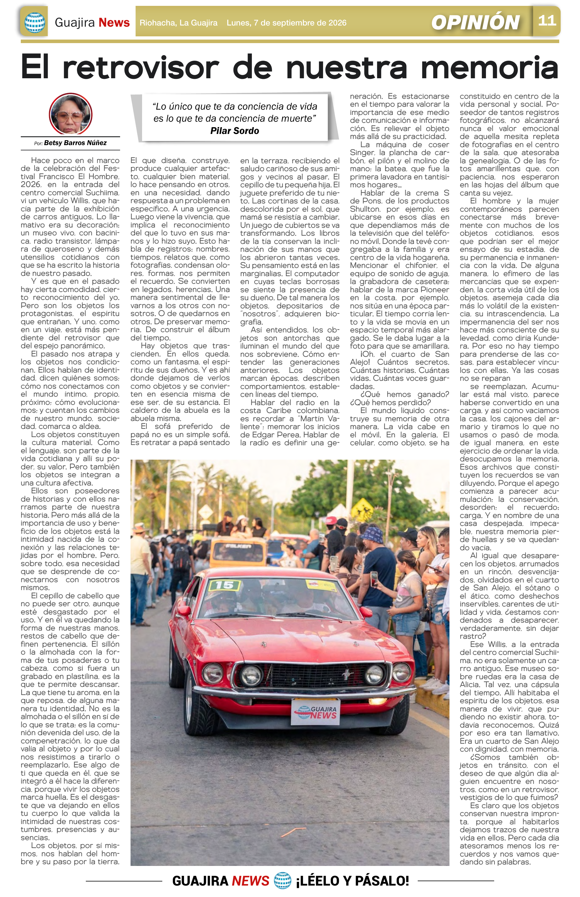
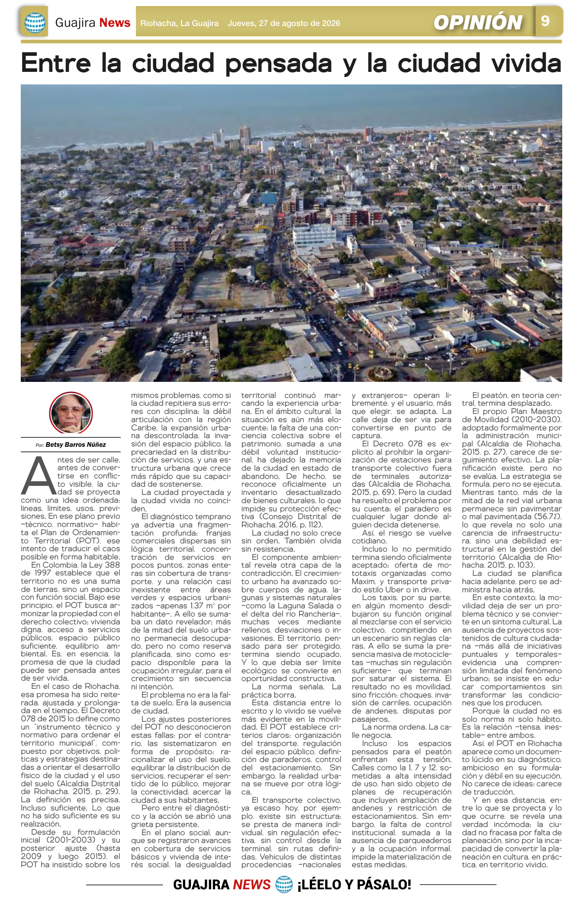
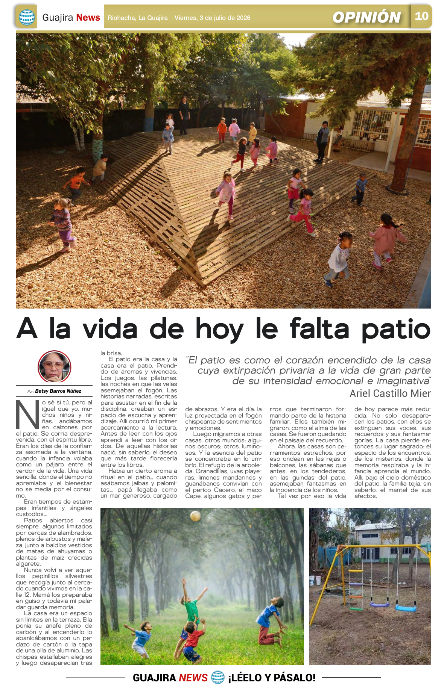
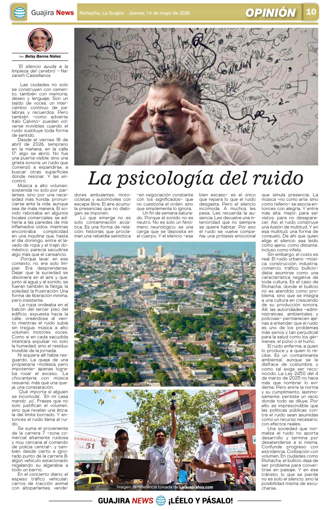

El retrovisor de nuestra memoria
Una reflexión sobre los objetos cotidianos como depositarios de identidad, afecto, memoria y huellas de quienes los habitan.
Archivo de opinión
Artículos de Betsy Barros Núñez publicados en Guajira News, reunidos para leerlos, compartirlos y descargarlos desde un solo lugar.
Enlace directo: betsybarros.vercel.app/blog.html
Guajira News
Selecciona un artículo para leer el texto completo. Cada entrada incluye opciones para compartir y descargar.

Una reflexión sobre los objetos cotidianos como depositarios de identidad, afecto, memoria y huellas de quienes los habitan.

Una mirada a la distancia entre la planificación urbana y la ciudad que realmente viven sus habitantes.

Una evocación del patio como espacio de memoria, encuentro, imaginación y vida cotidiana.

Una reflexión sobre el miedo, la desigualdad y las formas de habitar Riohacha.

Una reflexión sobre el ruido urbano, la convivencia y la salud en Riohacha.